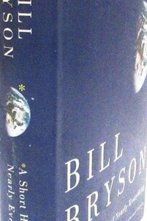

Library › History
A Short History of Nearly Everything — Summary & Key Lessons

The story of science from the Big Bang to you — read like a thriller, written like a friend.
📖 OPEN THE FULL INTERACTIVE BREAKDOWN →🌐 Read it in Hindi, Hinglish, Gujarati, Tamil & 22 more languages — free, with audio.
💡 The Big Idea
Bryson set himself an impossible task — explain the universe, the earth, life and civilisation in one volume — and did it by foregrounding the scientists as much as the science: the oddballs, obsessives and accidental geniuses who stumbled toward understanding. His method is the lesson: curiosity about how we know is more valuable than memorising what we know, and humility fits the view of a species sitting on a speck, barely aware of its own planet.
🧠 The 6 Key Lessons
Lesson 1: The Scale of Ignorance
Chapter 1: The Big Picture
Bryson's first effect is perspective: the universe is unimaginably old and vast, and our knowledge of it is a thin skin of guesswork over an ocean of unknown — including most of our own planet and most of our own genome. The honest stance of science is provisional knowledge; the opposite of magic is not mystery but method.
📖 Example: We knew almost nothing about the deep ocean floor until the 1870s — and still map Mars better than our own seabed. Read the full example →
⚡ Do this: For one topic you think you know, write one sentence on what is still unknown about it.
Lesson 2: Luck Makes the Rules of the Game
Chapter 2: The Cosmic Lottery
The conditions for life are absurdly specific — a star of the right size, a planet at the right distance, a stabilising moon, plate tectonics recycling carbon, a magnetic field deflecting radiation. Each is a near-miss of probability. The lesson for lives as for planets: the rare conditions you are in are not entitlement; they are endowment, to be stewarded.
📖 Example: Earth's moon is freakishly large for its planet — without its stabilising tug, the climate would be chaos. Read the full example →
⚡ Do this: List three 'rare conditions' in your own life (health, education, place, timing) and steward one actively.
Lesson 3: Catastrophes Are the Editors of History
Chapter 3: Extinction
Life's story is not gentle: asteroid impacts, supervolcanoes and ice ages have repeatedly erased most species, clearing the way for the rest. Darwin's 'survival of the fittest' is better read as survival of the adaptable — the mammals that inherited the earth were unremarkable until the dinosaurs vacated. Resilience, not dominance, is the long game.
📖 Example: A small, burrowing mammal in the Cretaceous was nothing special — until a rock from space made it the ancestor of everything warm-blooded. Read the full example →
⚡ Do this: Ask of your organisation or career: if the dominant incumbent vanished tomorrow, what would be my edge?
Lesson 4: The Unbearable Frailty of Our Position
Chapter 4: The Thin Skin
Everything we are lives in a few kilometres of atmosphere and a thin layer of soil — the rest of the planet is hot rock, cold vacuum or crushing water. The fragility is the point: the systems that sustain us are held together by margins that civilisation routinely ignores.
📖 Example: One degree of average warming reorganises the weather patterns that feed billions; the margin was always the whole game. Read the full example →
⚡ Do this: Identify one margin you are living on (finances, sleep, relationships) and strengthen it before the stress arrives.
Lesson 5: How We Know: The Method Is the Miracle
Chapter 5: The Scientists
Bryson's secret weapon is the people: Newton's obsessions, the geologists who argued continents move for fifty years before being right, the discoverers who were wrong. Science advances not by genius alone but by the slow machinery of doubt, evidence and revision — the best error-correcting system humans have built. It is a model for every team: be rigorous about evidence and polite about being wrong.
📖 Example: Alfred Wegener was mocked for continental drift in 1912; the evidence landed decades later — and he never saw the vindication. Read the full example →
⚡ Do this: In one area where you hold a strong belief, write what evidence would change your mind — then look for it.
Lesson 6: Deep Time: How Earth's Story Sizes Us
The Size of Earth (Chapter 4-6)
Bryson's greatest gift is scale: 4.5 billion years compressed into a readable story — drifting continents, ice ages that erase, species that dominate an epoch and vanish. Seen at that scale, our century is a single frame in a very long film, and most of our urgencies lose a little of their weight.
📖 Example: The dinosaurs ruled for 165 million years; humans have been here for about 300,000 — we are the newest frame, and the film does not pause for us. Read the full example →
⚡ Do this: Read one natural-history story this month — and let its timescale recalibrate one of your worries.
✅ 5-Step Action Plan
- Write one unknown about a topic you think you know.
- Steward one rare condition in your life actively.
- Ask the catastrophe question: what is my edge if the incumbent vanishes?
- Strengthen one margin before the stress arrives.
- Define the evidence that would change one belief.
⚠️ When This Doesn't Work
The book is a tour, not a course; its cheerful tone glosses over scientific controversies and its physics is dated (2003). Its real gift is the posture of inquiry, not the facts — so check modern sources for anything you act on.
💀 The Graveyard Proves It
📷 Hubble's Mirror — The $1.5B Telescope That Launched Blurry. Burn: $1.5B + 3 years of ridicule Read the full case study →
💬 Best Quotes from A Short History of Nearly Everything
- “We are each of us a temporary manifestation of an impulse, a thought, an idea, a journey.”
- “The more I read, the more I understood that the story of science is not the story of knowers, but of those who were right against the evidence.”
- “The universe has been around a long time, and we are a late arrival.”
Interactive version: mark lessons as read, listen in your language, share quote cards.